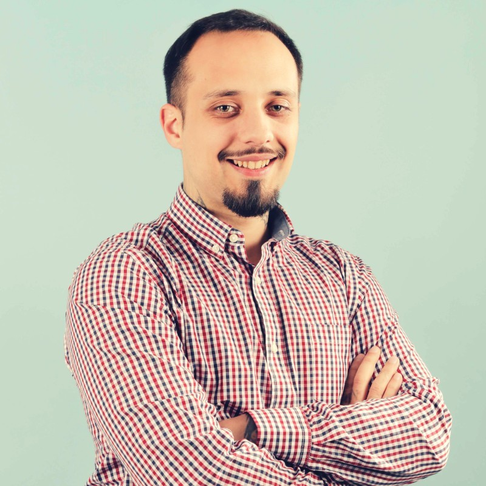

"Somos un equipo interdisciplinario de profesionales y ofrecemos servicios de consultoría integral para organizaciones. Nos especializamos en distintas áreas y ámbitos de la gestión de proyectos, el coaching, el análisis de datos y el control de calidad en los procesos. De este modo guiamos y acompañamos a las empresas hacia la gestión óptima de sus talentos, promoviendo el crecimiento y la mejora continua. Nos entusiasma generar soluciones de alto impacto, y facilitar nuevas oportunidades de crecimiento."


Agustín Florio
CEO & Founder
- Especialista en Data Analytics & Business Intelligence
- Agile Project Manager
- Lean Six Sigma Green Belt
- Licenciado en Historia Universal
Luis Florio
CTO Director de Tecnología
- Analista de Sistemas
- Full Stack Developer
- 38 años como Software Developer en Telecom
Leticia Vazquez
CRO Directora de Ingresos
- Especialista en Estrategia de Negocios
- Lic. en Administración de Empresas
- Coach Organizacional
- Scrum Master
Nuestros Valores
¡Nos complace formar parte de la revolución de la información! Estamos en un momento único en la historia, en el que el hombre ha logrado tener las herramientas tecnológicas necesarias para registrar y analizar grandes cantidades de información. Esto nos brinda la posibilidad de acceder a conocer nuestra realidad de un modo mucho más objetivo y preciso. Ayudándonos a aprender, implementar mejoras y tomar decisiones de alto impacto a velocidades nunca antes vistas. Nos hace felices que nuestros clientes formen parte de esta transformación y se puedan posicionar de forma sólida en el mundo actual.